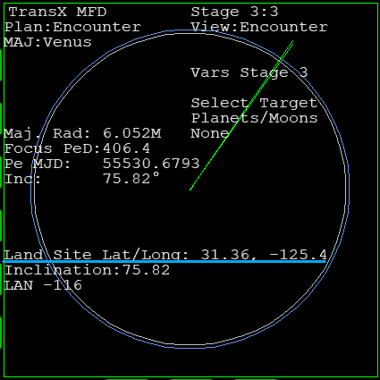

マニューバを作成・実行して、地球軌道を離脱します。
左右のMFDでTransXを開く。
両方ともStage 1にしておく。
Stage 2になっていたら、BCKをクリック。
View:Escape Planを表示しておく。
もう1つはView:Manoeuvreを開く。
Begin Burnが2000(2k)を切るまで待つ。
Manoeuvre modeをOnにする。
View:Escape Planに移動する。
Delta Vの数字を確認する。
View:Manoeuvreに移動する。
Prograde vel.を選択する。
ENTをクリック。
Escape PlanのDelta Vの数字を入力する。
TransXでは、接頭辞をつけて入力することはできない。
例えば3.571kと表示されていたら、3571に直して入力する。
View:Manoeuvreに移動する。
Man. dateを選択する。
-AJを何度かクリック。
感度をHyperにしておく。
++をクリック。
ふたつの黄色い点線を重ねる。
View:Escape Planに移動する。
FWDをクリック。
Stage 2にする。
View:Eject Planを表示する。
Prograde vel.を0にする。
ADJをクリックして、Resetを選択。
++をクリックする。
同様に、Outward、Ch. planeも0にする。
Planが消えて、作成中のマニューバが優先される。
Stage 1のView:Manoeuvreを開いておく。
Stage 2のView:Eject Planを開いておく。
マニューバを修正する。
Cl. App.を小さくする。
View:Manoeuvreに移動する。
Man. dateを選択する。
ADJをクリック。
感度をMicroにする。
View:Eject Planで結果を確認する。
Man. dateを操作する。
Cl. App.をできるだけ小さくする。
Prograde vel.を操作する。
Cl. Appを小さくする。
同様に、Outward、Ch. planeを操作する。
できるだけCl. Appを小さくする。
色々な組み合わせを試して、必要なDelta Vをできるだけ小さくする。
この作業が難しく感じられるときは、下記を参照すること。
View:Eject Planで、FWDをクリック。
Stage 3にする。
View:Encounterに切り換える。

惑星に衝突する軌道になっていると、Land Site（予想着陸地点）が表示される。
この時点では、目標の惑星に衝突するような軌道にしておく。※
軌道の高さなどは考えなくてよい。
※TransXの軌道予測は誤差が大きいため、実際に衝突することはない。
View:Manoeuvreに移動する。
View:Targetに切り替える。
Begin Burnが300になるまで待つ。
++Updatesを実行する。
必要があれば、マニューバを修正する。
Auto-Centerを実行する。
Begin Burnが0になったらエンジン噴射。
この噴射には時間がかかるので、10倍までのタイムワープを使う。
Delta Vが5になったら噴射を止める。
Auto-CenterをOffにする。
Manoeuvre modeをOffにする。
目標惑星に衝突するように軌道を修正する。
View:Encounterで結果を確認する。
RCS LINにする。
上下・左右・前後に噴射して、軌道修正する。
TransXの軌道予測は正確ではないので、数字は激しく変化する。
一度目標惑星に衝突する軌道になったら、次の軌道修正まで気にしなくてよい。
地球の重力圏を脱出してからのほうが、マニューバを作成しやすい。
View:Encounterで軌道が確認できる程度まで寄せたら、そのままマニューバを実行、地球を離れてもよい。